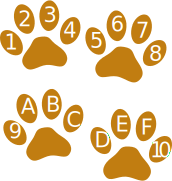

Number Bases
Base 10
We use "Base 10" every day ... it is our Decimal Number System.
It has 10 digits:
0 1 2 3 4 5 6 7 8 9
We count like this:| 0 | Start at 0 | ||
| • | 1 | Then 1 | |
| •• | 2 | Then 2 | |
| ⋮ | |||
| ••••••••• | 9 | Up to 9 | |
| •••••••••• | 10 | Start back at 0 again, but add 1 on the left | |
| •••••••••• • |
11 | ||
| •••••••••• •• |
12 | ||
| ⋮ | |||
| •••••••••• ••••••••• |
19 | ||
| •••••••••• •••••••••• |
20 | Start back at 0 again, but add 1 on the left | |
| •••••••••• •••••••••• • |
21 | And so on! |
But there are other bases!
Binary (Base 2) has only 2 digits: 0 and 1
We count like this:
| 0 | Start at 0 | ||
| • | 1 | Then 1 | |
| •• | 10 | Start back at 0 again, but add 1 on the left | |
| ••• | 11 | ||
| •••• | 100 | start back at 0 again, and add one to the number on the left... ... but that number is already at 1 so it also goes back to 0 ... ... and 1 is added to the next position on the left |
|
| ••••• | 101 | ||
| •••••• | 110 | ||
| ••••••• | 111 | ||
| •••••••• | 1000 | Start back at 0 again (for all 3 digits), add 1 on the left |
|
| ••••••••• | 1001 | And so on! |
See how it is done in this little demonstration (press play):
Also try Decimal, and try other bases like 3 or 4.
It will help you understand how all these different bases work.
Ternary (Base 3) has 3 digits: 0, 1 and 2
We count like this:
| 0 | Start at 0 | ||
| • | 1 | Then 1 | |
| •• | 2 | ||
| ••• | 10 | Start back at 0 again, but add 1 on the left | |
| •••• | 11 | ||
| ••••• | 12 | ||
| •••••• | 20 | Start back at 0 again, but add 1 on the left | |
| ••••••• | 21 | ||
| •••••••• | 22 | ||
| ••••••••• | 100 | start back at 0 again, and add one to the number on the left... ... but that number is already at 2 so it also goes back to 0 ... ... and 1 is added to the next position on the left |
|
| •••••••••• | 101 | And so on! |
Quaternary (Base 4) has 4 digits: 0, 1, 2 and 3
We count like this:
| 0 | Start at 0 | ||
| • | 1 | Then 1 | |
| •• | 2 | ||
| ••• | 3 | ||
| •••• | 10 | Start back at 0 again, but add 1 on the left | |
| ••••• | 11 | ||
| •••••• | 12 | ||
| ••••••• | 13 | ||
| •••••••• | 20 | Start back at 0 again, but add 1 on the left | |
| ••••••••• | 21 | And so on! |
Quinary (Base 5) has 5 digits: 0, 1, 2, 3 and 4
We count like this:
| 0 | Start at 0 | ||
| • | 1 | Then 1 | |
| •• | 2 | ||
| ••• | 3 | ||
| •••• | 4 | ||
| ••••• | 10 | Start back at 0 again, but add 1 on the left | |
| •••••• | 11 | ||
| ••••••• | 12 | ||
| •••••••• | 13 | ||
| ••••••••• | 14 | ||
| •••••••••• | 20 | Start back at 0 again, but add 1 on the left | |
| •••••••••• • |
21 | And so on! |
Senary (Base 6) has 6 digits: 0, 1, 2, 3, 4 and 5
We count like this:
| 0 | Start at 0 | ||
| • | 1 | Then 1 | |
| •• | 2 | ||
| ••• | 3 | ||
| •••• | 4 | ||
| ••••• | 5 | ||
| •••••• | 10 | Start back at 0 again, but add 1 on the left | |
| ••••••• | 11 | ||
| •••••••• | 12 | ||
| ••••••••• | 13 | ||
| •••••••••• | 14 | ||
| •••••••••• • |
15 | ||
| •••••••••• •• |
20 | Start back at 0 again, but add 1 on the left | |
| •••••••••• ••• |
21 | And so on! |
Septenary (Base 7) has 7 digits: 0, 1, 2, 3, 4 5 and 6
We count like this:
| 0 | Start at 0 | ||
| • | 1 | Then 1 | |
| •• | 2 | Then 2 | |
| ⋮ | |||
| •••••• | 6 | Up to 6 | |
| ••••••• | 10 | Start back at 0 again, but add 1 on the left | |
| •••••••• | 11 | ||
| ••••••••• | 12 | ||
| ⋮ | |||
| •••••••••• ••• |
16 | ||
| •••••••••• •••• |
20 | Start back at 0 again, but add 1 on the left | |
| •••••••••• ••••• |
21 | And so on! |
Octal (Base 8) has 8 digits

If Dogs ruled the world they might use base-8 instead of decimal:
0 1 2 3 4 5 6 7
| 0 | Start at 0 | ||
| • | 1 | Then 1 | |
| •• | 2 | Then 2 | |
| ⋮ | |||
| ••••••• | 7 | Up to 7 | |
| •••••••• | 10 | Start back at 0 again, but add 1 on the left | |
| ••••••••• | 11 | ||
| •••••••••• | 12 | ||
| ⋮ | |||
| •••••••••• ••••• |
17 | ||
| •••••••••• •••••• |
20 | Start back at 0 again, but add 1 on the left | |
| •••••••••• ••••••• |
21 | And so on! |
Nonary (Base 9) has 9 digits:
0 1 2 3 4 5 6 7 8
We count like this:
| 0 | Start at 0 | ||
| • | 1 | Then 1 | |
| •• | 2 | Then 2 | |
| ⋮ | |||
| •••••••• | 8 | Up to 8 | |
| ••••••••• | 10 | Start back at 0 again, but add 1 on the left | |
| •••••••••• | 11 | ||
| •••••••••• • |
12 | ||
| ⋮ | |||
| •••••••••• ••••••• |
18 | ||
| •••••••••• •••••••• |
20 | Start back at 0 again, but add 1 on the left | |
| •••••••••• ••••••••• |
21 | And so on! |
Decimal (Base 10) has 10 digits:
0 1 2 3 4 5 6 7 8 9
Well ... we talked about this at the start but here it is again:
| 0 | Start at 0 | ||
| • | 1 | Then 1 | |
| •• | 2 | Then 2 | |
| ⋮ | |||
| ••••••••• | 9 | Up to 9 | |
| •••••••••• | 10 | Start back at 0 again, but add 1 on the left | |
| •••••••••• • |
11 | ||
| •••••••••• •• |
12 | ||
| ⋮ | |||
| •••••••••• ••••••••• |
19 | ||
| •••••••••• •••••••••• |
20 | Start back at 0 again, but add 1 on the left | |
| •••••••••• •••••••••• • |
21 | And so on! |
Undecimal (Base 11)
Undecimal (Base 11) needs one more digit than Decimal, so "A" is used, like this:
| Decimal: | 0 | 1 | 2 | 3 | 4 | 5 | 6 | 7 | 8 | 9 | 10 | 11 | 12 | ... |
|---|---|---|---|---|---|---|---|---|---|---|---|---|---|---|
| Undecimal: | 0 | 1 | 2 | 3 | 4 | 5 | 6 | 7 | 8 | 9 | A | 10 | 11 | ... |
Duodecimal (Base 12)
Duodecimal (Base 12) needs two more digits than Decimal, so "A" and "B" are used:
| Decimal: | 0 | 1 | 2 | 3 | 4 | 5 | 6 | 7 | 8 | 9 | 10 | 11 | 12 | 13 | ... |
|---|---|---|---|---|---|---|---|---|---|---|---|---|---|---|---|
| Duodecimal: | 0 | 1 | 2 | 3 | 4 | 5 | 6 | 7 | 8 | 9 | A | B | 10 | 11 | ... |

Hexadecimal (Base 16)
Dogs might understand hexadecimal well.
It uses the digits 0 to 9, then the six letters A to F, like this:
| Decimal: | 0 | 1 | 2 | 3 | 4 | 5 | 6 | 7 | 8 | 9 | 10 | 11 | 12 | 13 | 14 | 15 | 16 | 17 | ... |
|---|---|---|---|---|---|---|---|---|---|---|---|---|---|---|---|---|---|---|---|
| Hexadecimal: | 0 | 1 | 2 | 3 | 4 | 5 | 6 | 7 | 8 | 9 | A | B | C | D | E | F | 10 | 11 | ... |
Vigesimal (Base 20)
With vigesimal, the convention is that I is not used because it looks like 1, so J=18 and K=19, as in this table:
| Decimal: | 0 | 1 | 2 | 3 | 4 | 5 | 6 | 7 | 8 | 9 | 10 | 11 | 12 | 13 | 14 | 15 | 16 | 17 | 18 | 19 | 20 | ... |
|---|---|---|---|---|---|---|---|---|---|---|---|---|---|---|---|---|---|---|---|---|---|---|
| Vigesimal: | 0 | 1 | 2 | 3 | 4 | 5 | 6 | 7 | 8 | 9 | A | B | C | D | E | F | G | H | J | K | 10 | ... |
Sexagesimal (Base 60)
Sexagesimal works like clockwork!
There are no special codes, just the numbers 0 to 59, like we use with hours and minutes.
The main advantage is that 60 can be evenly divided by 2, 3, 4, 5, 6, 10, 12, 15, 20 and 30, which makes it easy for us to divide up hours and minutes.
More About Bases
The Number Base is also called the Radix
How to Show the Base
To show what base a number has, put the base in the lower right like this:
1012
This shows that is in Base 2 (Binary)
3148
This shows that is in Base 8 (Octal)